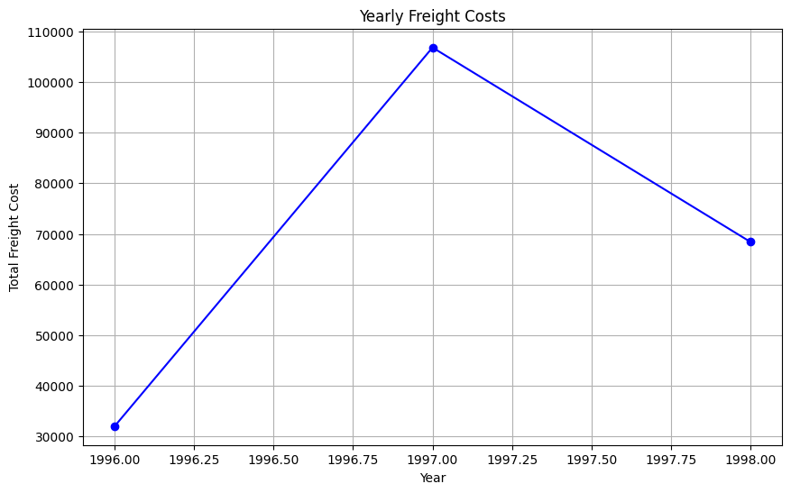
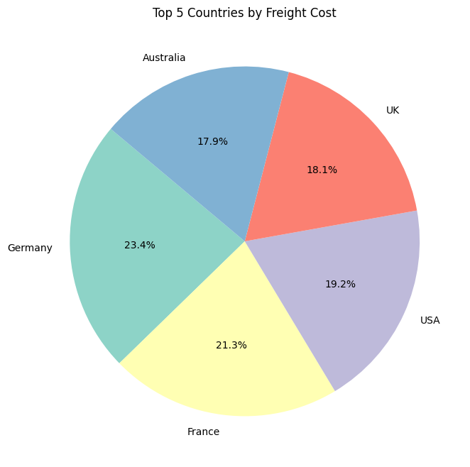
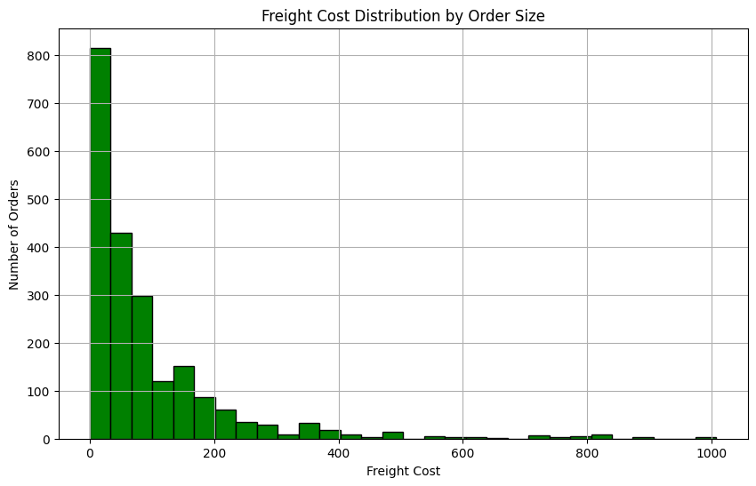
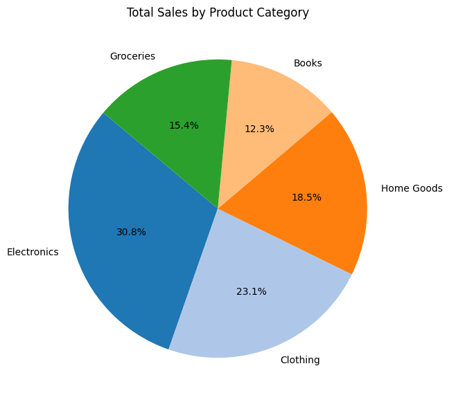
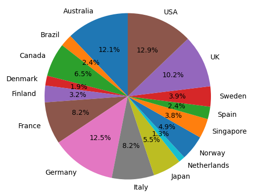

! pip install streamlit!pip install altairimport pandas as pd
import numpy as np
import matplotlib.pyplot as plt
import seaborn as sns
import warnings as wrn
import streamlit as st
import altair as alt
wrn.filterwarnings('ignore', category = DeprecationWarning)
wrn.filterwarnings('ignore', category = FutureWarning)
wrn.filterwarnings('ignore', category = UserWarning)
df= pd.read_excel("//kaggle//input//fenix-shipping-data//bi5EoWE9QkiqEMz37MceAw_2edba123616f40909cb8896b374a31a1_Fenix-Shipping-Data.xlsx")# Extract year from order_date and calculate yearly freight costs
yearly_freight_costs = df.groupby(df['order_date'].dt.year)['freight'].sum()
# Creating the Yearly Freight Costs line chart
plt.figure(figsize=(10, 6))
yearly_freight_costs.plot(kind='line', marker='o', linestyle='-', color='blue')
plt.title('Yearly Freight Costs')
plt.xlabel('Year')
plt.ylabel('Total Freight Cost')
plt.grid(True)
plt.show()
# Calculate total freight costs by country and select the top 5 countries
top_countries_freight = df.groupby('country')['freight'].sum().sort_values(ascending=False).head(5)
# Creating the Top 5 Countries by Freight Cost pie chart
plt.figure(figsize=(8, 8))
top_countries_freight.plot(kind='pie', autopct='%1.1f%%', startangle=140, colors=plt.cm.Set3.colors)
plt.title('Top 5 Countries by Freight Cost')
plt.ylabel('') # Hide the y-label
plt.show()
# Creating the Freight Cost Distribution by Order Size histogram
plt.figure(figsize=(10, 6))
df['freight'].plot(kind='hist', bins=30, color='green', edgecolor='black')
plt.title('Freight Cost Distribution by Order Size')
plt.xlabel('Freight Cost')
plt.ylabel('Number of Orders')
plt.grid(True)
plt.show()
# Hypothetical sales data by product category
product_categories = ['Electronics', 'Clothing', 'Home Goods', 'Books', 'Groceries']
sales_volumes = [20000, 15000, 12000, 8000, 10000]
# Create a pie chart
plt.figure(figsize=(10, 7))
plt.pie(sales_volumes, labels=product_categories, autopct='%1.1f%%', startangle=140, colors=plt.cm.tab20.colors)
plt.title('Total Sales by Product Category')
plt.show()
# Convert order_date to datetime if not already in that format
df['order_date'] = pd.to_datetime(df['order_date'])
# Calculate total freight costs
total_freight = df['freight'].sum()
# Analyze sales (freight) over time - monthly
monthly_sales = df.set_index('order_date')['freight'].resample('M').sum()
total_freight, monthly_sales(207306.09999999998,
order_date
1996-07-31 4000.88
1996-08-31 4348.43
1996-09-30 3307.37
1996-10-31 5423.29
1996-11-30 5985.35
1996-12-31 9006.21
1997-01-31 7022.50
1997-02-28 5099.44
1997-03-31 6617.18
1997-04-30 9977.39
1997-05-31 12271.50
1997-06-30 5514.03
1997-07-31 8621.37
1997-08-31 9686.56
1997-09-30 10934.76
1997-10-31 14047.60
1997-11-30 6040.46
1997-12-31 10959.28
1998-01-31 19027.55
1998-02-28 10541.08
1998-03-31 16112.59
1998-04-30 20186.53
1998-05-31 2574.75
Freq: ME, Name: freight, dtype: float64)
# Aggregate data to count orders by country
orders_by_country = df.groupby('country').size().reset_index(name='order_count')
# Create pie chart
fig, ax = plt.subplots()
ax.pie(orders_by_country['order_count'], labels=orders_by_country['country'], autopct='%1.1f%%', startangle=90)
ax.axis('equal') # Equal aspect ratio ensures that pie is drawn as a circle.
# Display the chart
st.title('Distribution of Orders by Country')
st.pyplot(fig)DeltaGenerator()
# Sidebar filters
st.sidebar.header('Filters')
date_range = st.sidebar.date_input("Date range", [])
ship_via = st.sidebar.multiselect('Ship Via', options=df['ship_via'].unique())
# Filter the data based on selections
filtered_data = df.copy()
if date_range:
filtered_data = filtered_data[(filtered_data['order_date'] >= date_range[0]) & (filtered_data['order_date'] <= date_range[1])]
if ship_via:
filtered_data = filtered_data[filtered_data['ship_via'].isin(ship_via)]
# Group data by region
orders_per_region = filtered_data.groupby('region')['order_id'].nunique().reset_index()
# Chart: Orders per Region
chart = alt.Chart(orders_per_region).mark_bar().encode(
x='region:N',
y='order_id:Q',
tooltip=['region', 'order_id']
).properties(width=600, height=400, title='Orders per Region')
st.altair_chart(chart, use_container_width=True)DeltaGenerator()